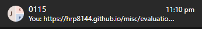
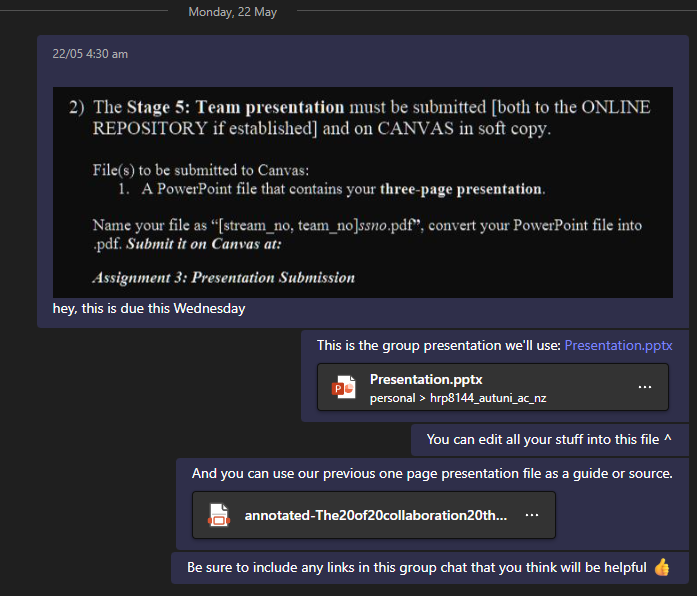

Meeting Minutes
Team name: 0115
Team Coordinator/Leader: Benson
Microsoft Teams Chat


Labs 6 - 12
Research/Website Design & Writing.
Using appropriate APA Referencing with Google Scholar and TA Guidance.
June 2023
by Group 0115, consisting of Benson & Vincent.
Made for Assignment 3 of COMP501 - Computing Technology in Society 2023 S1
Thanks to Tony Clear for the foundation of the website